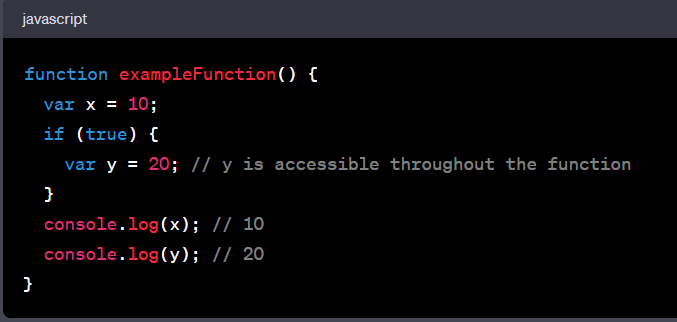
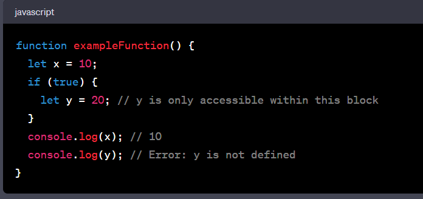
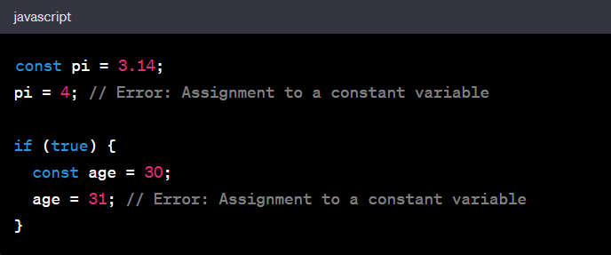

In JavaScript, "var", "let", and "const" are used to declare variables, but they have different scopes and
behaviors. Let's discuss the scope and usage of each:
var
"var" declarations are function-scoped. This means that they are accessible throughout the entire
function in which they are declared, regardless of where within the function they are declared.
If declared outside of any function, a "var" "variable becomes globally scoped and is accessible throughout the entire JavaScript program.
variables declared with "var" are also hoisted, which means they are moved to the top of their containing function or global scope during the compilation phase. This can sometimes lead to unexpected behavior if not used carefully.
Example:

let
"let" declarations are block-scoped. This means they are only accessible within the block in which they are defined (including loops, if statements, and functions).
Unlike "var", "let" variables are not hoisted, so you cannot access them before they are declared within their block.
Example:

const
"const" declarations are also block-scoped, just like "let".
However, "const" variables are used for values that should not be reassigned after their initial assignment. Once a "const" variable is assigned a value, it cannot be changed.
Example:
